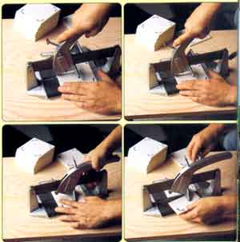

© AL CLAYTON
GROUTING ALTERNATIVE Apply with a sponge instead of a grout float. Press the grout firmly into the grout lines to remove all air bubbles. Clear the excess grout from the faces of the tiles with a grout float. Clean tiles with a damp sponge, rinsing to remove all grout.